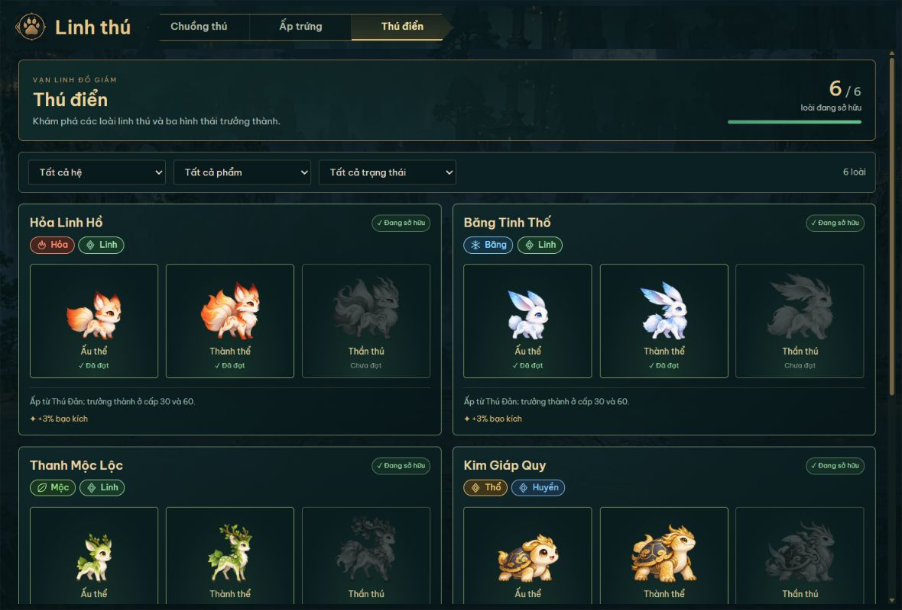
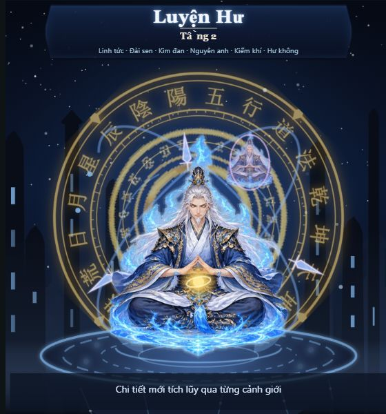
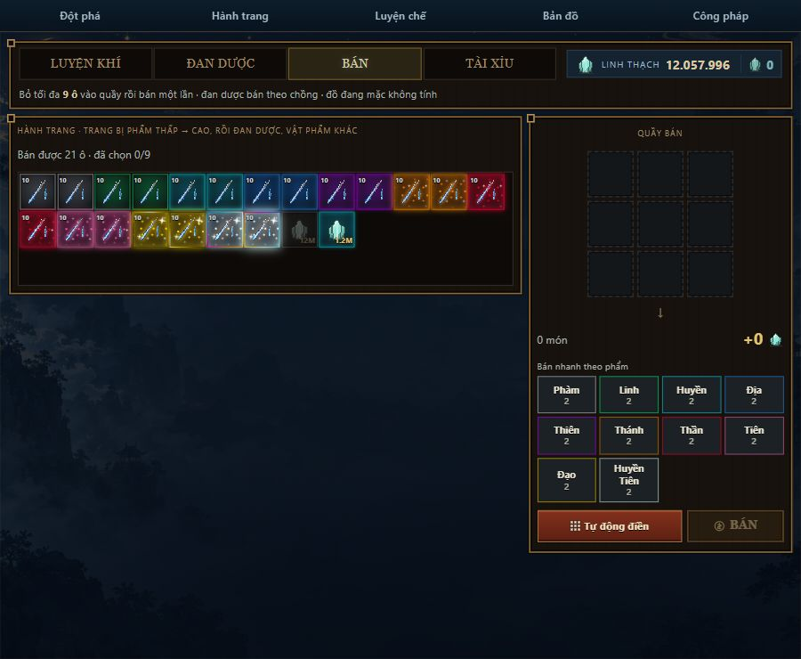
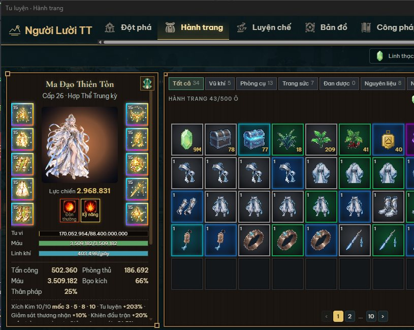
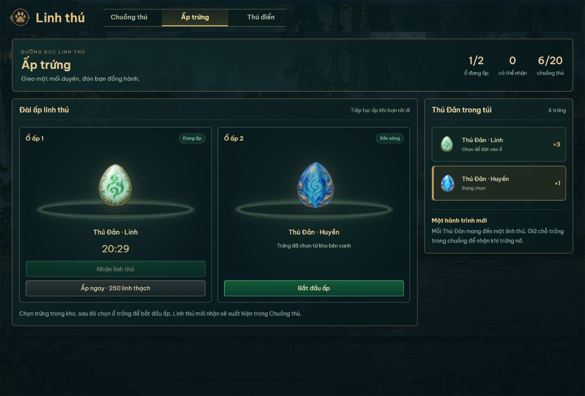

Treo máy, nhưng không nhàm
 Tự thám hiểm
Tự thám hiểm- Mỗi chuyến đi tu sĩ gặp yêu thú, đánh theo lượt, nhận tu vi và đồ rơi. Tắt máy vẫn tích tu vi, tối đa 2 giờ.
- Đột phá cảnh giới
- Luyện Khí, Trúc Cơ, Kim Đan… đến Hợp Thể. Gom đan, yêu hạch Boss và linh thạch rồi đánh cược tỉ lệ đột phá. Thất bại có thể tẩu hỏa nhập ma.
 Đan dược và trang bị
Đan dược và trang bị- Hợp thành đan 9 → 1, mặc kiếm, áo, nhẫn theo độ hiếm, bán đồ dư lấy linh thạch hoặc đem ra Chợ giao dịch với người chơi khác.
- Linh thú
- Ấp trứng, cho ăn, tiến hóa ba hình thái. Linh thú Thượng Cổ có thần thông riêng: hồi sinh, gọi sét tê liệt quái.
- Công pháp và trang phục
- Cây kỹ năng theo hệ Hỏa, Thủy, Mộc. Trang phục đổi theo cảnh giới, có hoạt ảnh đứng, thiền, chiến đấu.
- Thiên bảng online
- So cảnh giới, lực chiến, số ải vượt và linh thú mạnh nhất với người chơi khác. Không mạng vẫn chơi được.





Cài đặt
- Tải file ZIP bằng nút ở đầu trang.
- Giải nén: chuột phải vào file → Extract All…, chọn một thư mục riêng như
D:\Games\VanDao. Đừng chạy trực tiếp trong file ZIP và đừng đặt trongProgram Files. - Mở
VanDaoLauncher.exe. Launcher kiểm tra bản mới, tự tải và cập nhật khi có. - Bấm Chơi. Dải game hiện ngay trên taskbar. Chuột phải lên dải để đổi vị trí, kích thước hoặc ẩn xuống khay.
Tiến độ lưu trong %LocalAppData%\VanDao, cập nhật bản mới không mất nhân vật.
Windows báo “đã bảo vệ PC của bạn”?
Game chưa có chữ ký số nên Windows SmartScreen cảnh báo ở lần chạy đầu. Bấm Thông tin thêm rồi Vẫn chạy. Nếu phần mềm diệt virus chặn, hãy chỉ tải từ trang này hoặc GitHub Releases của dự án và đối chiếu mã SHA-256 bên dưới.
Yêu cầu
- Windows 10 hoặc 11, 64-bit
- Microsoft Edge WebView2 Runtime (có sẵn trên Windows 11; Windows 10 tải tại đây)
- Khoảng 500 MB trống
- Internet cho Thiên bảng, Chợ và cập nhật
Không cần cài .NET, đã kèm sẵn.